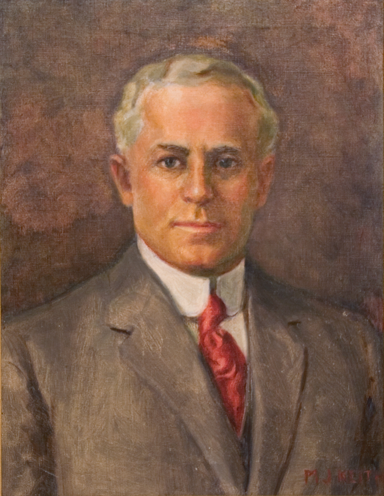

Portrait of Alexander Dawson Henderson Sr.
An original portrait by artist M. J. Keith. The painting, completed in the 1950s, was displayed for many years behind the desk of Alexander Dawson Henderson III in his Gold Coast Finance office in Florida. It was later given by the author's father to the author and remains in the family's collection.
Close Window
Last updated: August 6, 2026